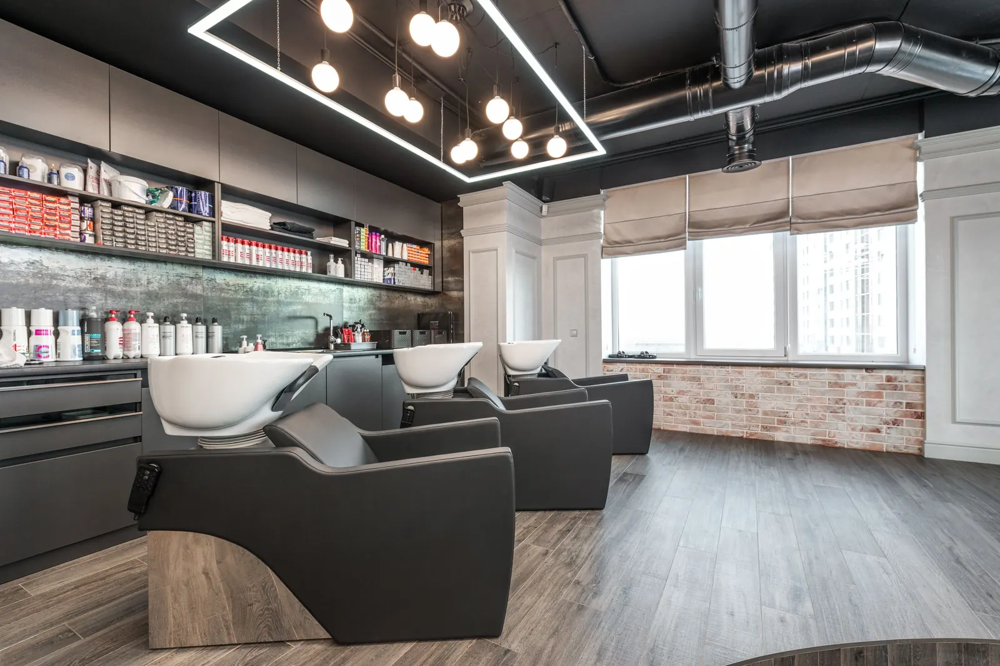
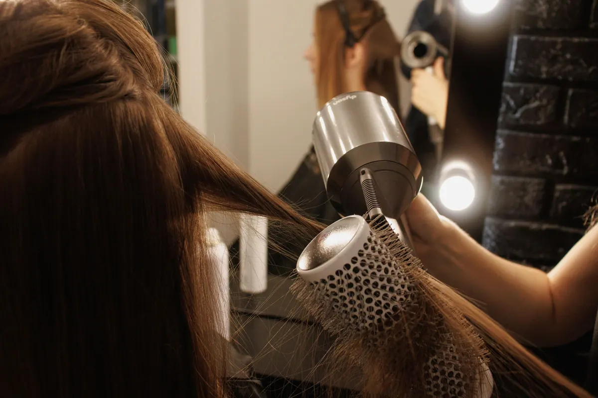
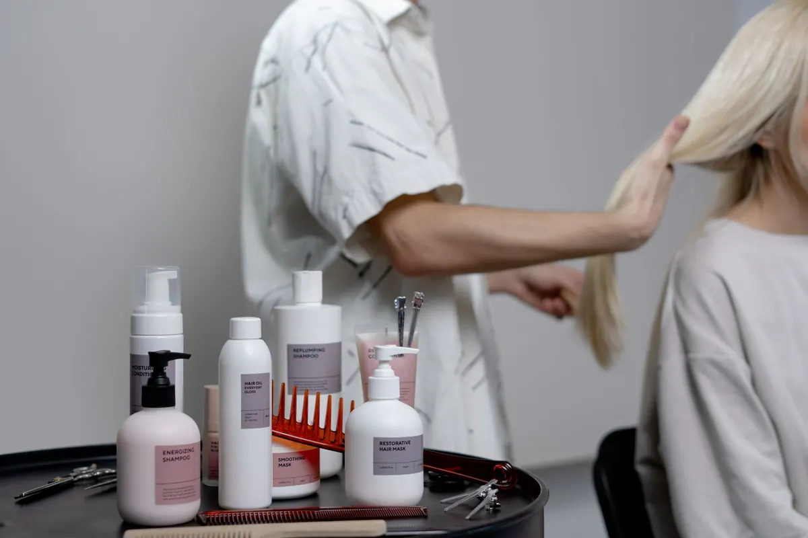
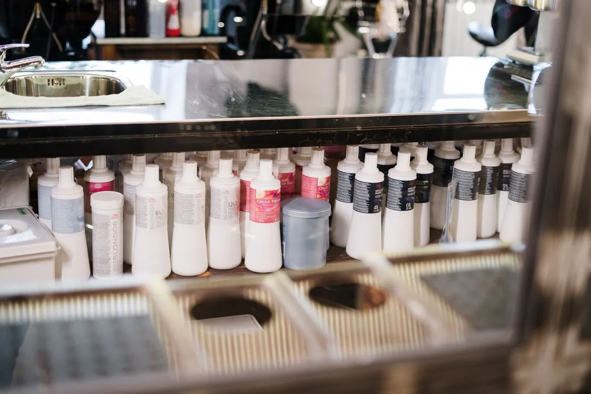

Kuaför · renk · cilt bakımı
Boş saati kendiniz seçin,
sıra beklemeyin.
Kesim, fön, renk ve cilt bakımı. Uzmanınızı ve saatinizi WhatsApp'tan seçin; randevudan bir gün önce hatırlatma gelsin.
Kuaför · cilt bakımı · Konyaaltı
Hizmetler ve fiyatlar
Fiyatlar temsilîdir; saç uzunluğuna göre değişir.
- 01Kesim + fön650 TL'dentemsilî
Yıkama dahil.
- 02Dip boya1.400 TL'dentemsilî
Tek renk, fön dahil.
- 03Ombre / balyaj3.200 TL'dentemsilî
Uzunluğa göre.
- 04Keratin bakım2.800 TL'dentemsilî
Düzleştirici bakım.
- 05Cilt bakımı1.200 TLtemsilî
Temizlik + nem maskesi, 60 dk.
- 06Gelin paketi9.500 TL'dentemsilî
Saç, makyaj, prova.
Fiyatlar örnek işletmeye aittir.



Hakkımızda
Salon hakkında
Konyaaltı'nda beş uzmanlı salon. Her müşterinin renk formülü kayıtlı; bir sonraki boyada aynı ton tutturulur.
Boş saatler WhatsApp asistanında anlık görünür.
Ekip (örnek)
- Merverenk uzmanı
- Okankesim
- Sedacilt bakımı
- Burcugelin saçı ve makyaj
Sık sorulanlar
Merak edilenler
Randevumu nasıl değiştiririm?
Hatırlatma mesajına yeni gün yazmanız yeterli.
Renk formülüm kayıtlı mı?
Evet, her boyada kullanılan ton ve oran kaydedilir.
Gelin provası ne zaman yapılır?
Düğünden 2–4 hafta önce; paket fiyata dahildir.
İletişim
Bize ulaşın
- AdresUncalı Mah., Atatürk Bulvarı · Konyaaltı / Antalya (örnek adres)
- SaatlerSalı–Pazar 10:00–21:00
- Telefon0242 ••• •• •• (örnek)
- WhatsAppasistanı deneyin ↓